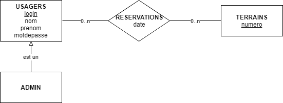

Par Christophe Apollon-Roy (920403) et Amélie Lacombe Robillard (20016735)
17 août 2018
Dans le cadre de ce projet, nous avons réalisé une application web utilisant la programmation côté client (Javascript et JQuery) et serveur (PHP), ainsi qu’une base de données SQL afin de gérer les réservations de terrains pour un club de sport fictif.
Nous avons choisi de structurer notre application de façon à faciliter son utilisation par un usager. Elle comporte une page d’accueil affichant un formulaire de connexion, une page d’inscription accessible via la page d’accueil, et plusieurs pages permettant aux usagers connectés d’accéder aux fonctionnalités de l’application selon leurs privilèges (joueurs ou admin) ainsi que d’afficher les résultats de leurs requêtes. Une barre de navigation facilite la navigation entre les différentes fonctionnalités disponibles. Notre application utilise également des cookies pour garder les informations de login de l’usager tout au long de sa session.
À des fins logistiques, nous avons supposé qu’un terrain ne peut être réservé par un joueur que pour une heure pile (ex. : 8h, 9h, 10h…), évitant ainsi que des terrains restent inoccupés en cours de journée à cause de trous de moins d’une heure entre deux réservations.
Afin de réduire le risque d’erreurs et de requêtes invalides de la part des usagers, nous avons choisi de restreindre les valeurs des requêtes qu’il est possible d’envoyer au serveur à l’aide de l’interface et de la programmation côté client. Ainsi, la réservation d’un terrain n’est possible que si le terrain est affiché comme disponible dans la table interactive de l’interface usager, et une réservation n’est annulable que si elle est listée parmi les réservations faites par l’usager. Similairement, nous avons utilisé l’élément html input de type number pour le formulaire de requête du panneau d’administration afin de restreindre les heures entrées par l’usager à des valeurs numériques entières comprises dans un intervalle donné (bien que cette décision limite la compatibilité de notre application avec de plus vieux navigateurs).
Notre base de données comprend 4 tables correspondant au schéma entité-association suivant :
Ce projet nous a permis de mettre en pratique les notions de programmation côté client et serveur vues dans le cadre du cours ainsi que de parfaire nos connaissances des langages et framework HTML, Javascript, JQuery et PHP. Il nous a également forcé à réviser les notions de SQL et de modèle entité-association vus dans le cadre du cours de base de données afin de concevoir la base de données de notre application.
Développer une application web d’architecture 3 tiers nous a sensibilisé à certains enjeux de développement, comme la délégation des responsabilités entre le client, serveur et la base de données, notamment pour la validation des données et requêtes, ainsi que les possibles failles de sécurité d’une telle application (ex. : mot de passe envoyé en clair, code malicieux envoyé par l’usager, etc.). Nous avons également réalisé l’importance de bien structurer notre code PHP dans un projet de plus grande envergure afin d’éviter la duplication de code. Finalement, nous avons également appris comment mettre en place un serveur local afin de tester localement le code PHP et les requêtes SQL de notre application.